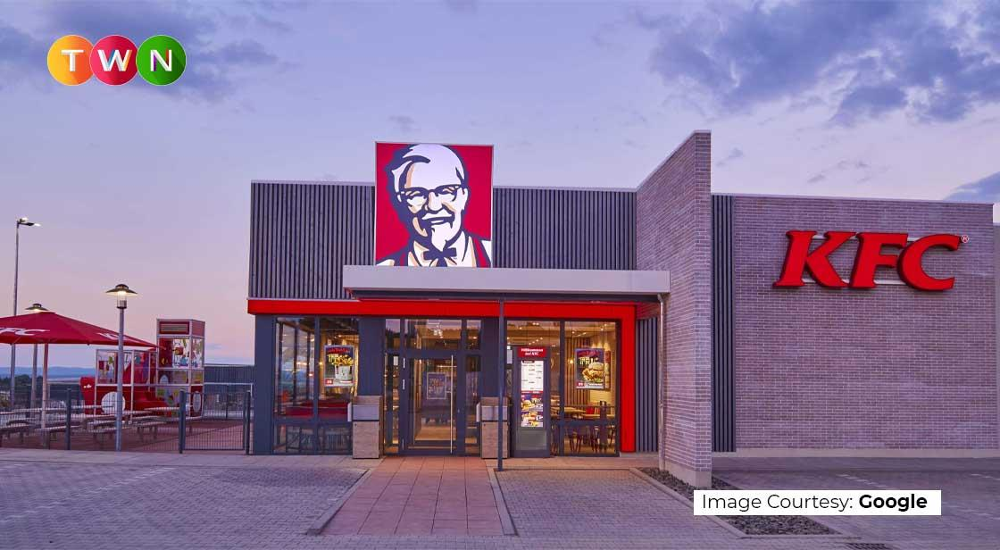

KFC is a global fast food restaurant chain that specializes in fried chicken. It was started by Harland Sanders in 1952 in Utah, and is now a subsidiary of Yum Brands. KFC is the world's second-largest restaurant chain by sales, with over 22,000 outlets in 150 countries as of 2019. KFC has a history of success and innovation in the chicken industry
